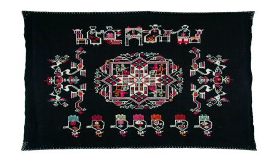
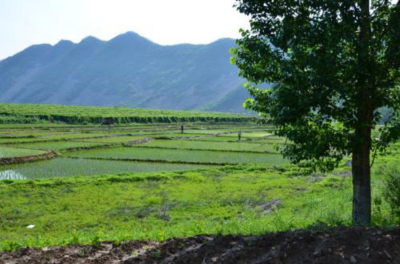

我的家乡在湖北省黄梅县，那是一个温柔宁静的小县城，那里充满了烟火气，孕育了很多文化，也保留了很多遗迹和老手艺：
|
1.黄梅戏 |
黄梅戏，原名黄梅调、采茶戏等，起源于湖北黄梅，与京剧、越剧、评剧、豫剧并称“中国五大戏曲剧种”，受到广泛欢迎。 黄梅戏是由山歌、秧歌、茶歌、采茶灯、花鼓调，先于农村，后入城市，逐步形成发展起来的一个剧种。它吸收了汉剧、楚剧、高腔、采茶戏、京剧等众多剧种的因素，逐渐形成了自己的艺术特点。黄梅戏唱腔淳朴流畅，以明快抒情见长，具有丰富的表现力；表演质朴细致，以真实活泼著称。一曲《天仙配》让黄梅戏流行于大江南北，在海外亦有较高的声誉。2006年5月20日，黄梅戏经国务院批准列入第一批国家级非物质文化遗产名录。 |
|
|
2.黄梅挑花 |
 |
黄梅挑花属于中国传统的民间刺绣工艺，但它又不同于一般的刺绣。刺绣重刺，刺绣时需在底布上下反复做刺绣的动作；挑花重挑，挑花时，只需在底布上方连续做挑花的动作。黄梅桃花的图案在构图上比较完整，图案布满整个画面，每件挑花作品的图案都有自己的主题,其主题题材多来源于民间。 黄梅挑花广泛流传于湖北省黄梅县的传统民间艺术。 起源于唐宋，发展成熟于明末清初。黄梅挑花刺绣重刺，挑花重挑。它以元青布作底，用针将五彩丝线挑制在底布的经线和纬线交叉的网格上，形成色泽绚丽、立体感强的图案。黄梅挑花属挑、补、绣这一民间刺绣的范畴，是在湖北省黄梅县民间长期广泛流传的一种传统工艺，其内容丰富，品种繁多，图案精美，色彩富丽，具有浓郁的地方风格和民族特色。2006年5月20日，黄梅挑花经国务院批准列入第一批国家级非物质文化遗产名录。2010年12月29日，原国家质检总局批准对“黄梅挑花”实施地理标志产品保护 |
|
3.禅宗文化 |
黄梅虽地处偏僻，但文化底蕴却极其丰厚。四祖五祖皆坐落于此，赵朴初先生称“大江生明月，东山何绵延；黄梅两祖庭，中华禅宗传”，道出了黄梅禅宗在中国佛教史上举足轻重的地位。 黄梅是禅宗发源地，佛教禅宗四祖道信、五祖弘忍、六祖惠能都在黄梅弘法修行并传承衣钵，六位祖师，独占其三，自古就有“蕲黄禅宗甲天下，佛教大事问黄梅”之说。近代，禅门尊宿本焕长老和净慧长老都长期驻锡于黄梅，安禅说法。可以说，黄梅是禅宗福地，黄梅也以禅宗文化闻名，兴起了以禅宗文化为首的旅游产业。 |
|
|
4.鱼米之乡 |
 |
黄梅鱼面黄梅位于古雷池（即龙感湖，不敢越雷池一步中的雷池即是也）之畔，境内大源湖盛产鱼虾，鱼是餐桌上的常菜，其中有一道独具风味的佳肴--鱼面。鱼面，又叫捶面。黄梅鱼面，相传有五百年的历史,是从明朝传下来的。 鱼面的制作很有讲究。首先要选用青、草、鲢、鲤等鱼肉,和上等白面、精制红苕粉或玉米粉，按一比一混合捣细，再拌上麻油、细盐，经过揉、擀、蒸、切、晒(即压片卷筒，蒸熟、切丝、晒干)等工序精制而成,是喜庆婚宴的一道上好特色菜。鱼面形状似普通面条，但更精细，以"色香味形"著称，它色白如银，条细如丝，越煮越清，面越透明，为湖北特产中的精品。黄梅鱼面问世以来，深受食客欢迎，它具有健脑、降血压、预防冠心病等多种功效，产品富含人体所需蛋白质、钙等多种微量元素，煨汤、烧、炒、火锅等都极具特色，适合各种年龄阶层的人食用，经常食用可增强体质，促进健康，哺乳期妇女食用尤为有益，能起到立杆见影的作用。鱼面是一种低胆固醇、纯天然的绿色营养食品，且烹调方便，可油炸，生炒，热煮，并可陪辅各种肉类和素菜，使主菜更为增色。易贮耐存,深受老百姓的喜爱。 |